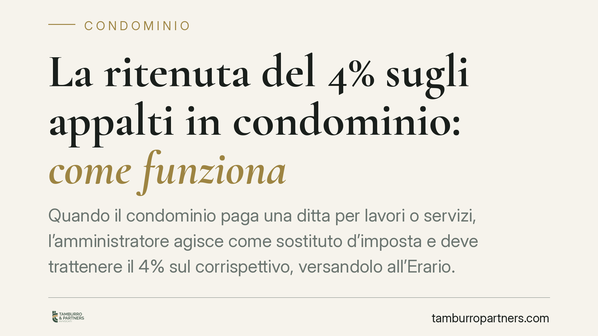

La ritenuta del 4% sugli appalti in condominio: come funziona
Quando il condominio paga una ditta per lavori o servizi, l'amministratore agisce come sostituto d'imposta e deve trattenere il 4% sul corrispettivo, versandolo all'Erario. È una regola già in vigore, spesso trascurata, che espone a sanzioni chi non la applica. Vediamo quando scatta, come funziona e cosa non vi rientra.

Il quadro: il condominio come sostituto d'imposta
Il condominio, pur non avendo personalità giuridica, è soggetto a precisi obblighi fiscali quando corrisponde somme a imprese per prestazioni rese nel suo interesse. In questi casi l'amministratore assume la veste di sostituto d'imposta: cioè è tenuto a trattenere una quota del pagamento dovuto al fornitore e a versarla direttamente allo Stato, in acconto delle imposte che il fornitore stesso dovrà.
La norma di riferimento è l'art. 25-ter del D.P.R. 29 settembre 1973 n. 600, introdotto dall'art. 1, comma 43, della L. 27 dicembre 2006 n. 296 (legge finanziaria 2007). La disposizione prevede una ritenuta a titolo di acconto pari al 4% dell'imponibile, applicata sui corrispettivi dovuti dal condominio in relazione a contratti di appalto di opere o servizi eseguiti nell'esercizio di impresa.
Resta inoltre fermo l'impianto generale sulla gestione condominiale delineato dalla L. 11 dicembre 2012 n. 220 (riforma del condominio), che ha rafforzato i doveri di rendicontazione e trasparenza a carico dell'amministratore.
Il perimetro: appalti sì, forniture no
Il punto più delicato è capire quando la ritenuta si applica. La distinzione decisiva è tra appalto di opere e servizi, da un lato, e semplice fornitura di beni o utenze, dall'altro.
La ritenuta del 4% riguarda i contratti di appalto: lavori edili e di manutenzione straordinaria, imbiancature, rifacimento facciate, interventi sull'impianto di riscaldamento, nonché servizi continuativi come pulizie, giardinaggio, manutenzione dell'ascensore o del verde.
Non rientrano, di norma, nel campo di applicazione:
- le forniture di beni senza posa in opera prevalente;
- le utenze (energia elettrica, acqua, gas);
- i compensi professionali soggetti a una diversa disciplina di ritenuta (ad esempio quelli di avvocati e tecnici, assoggettati alla ritenuta del 20% ex art. 25 D.P.R. 600/1973);
- i pagamenti verso soggetti che non operano nell'esercizio di impresa.
La qualificazione del contratto non è sempre immediata: nei casi misti (bene più installazione) occorre valutare la prestazione prevalente. In caso di dubbio consigliamo di acquisire preventivamente la natura della prestazione in fattura.
Versamento e tracciabilità
La ritenuta operata va versata con modello F24, utilizzando il codice tributo 1019 per i percipienti soggetti a IRPEF e il codice tributo 1020 per quelli soggetti a IRES, entro il giorno 16 del mese successivo a quello del pagamento al fornitore.
Quanto alla modalità di pagamento, la tracciabilità delle spese condominiali è già oggetto di attenzione sotto un duplice profilo. In primo luogo, la normativa antiriciclaggio e i limiti all'uso del contante (la soglia è attualmente fissata a 5.000 euro per i trasferimenti tra soggetti diversi) impongono prudenza nei pagamenti in denaro. In secondo luogo, l'uso del conto corrente condominiale e di strumenti tracciabili è funzionale alla corretta rendicontazione verso l'assemblea.
> Nota: circolano notizie su una futura "stretta" generalizzata ai pagamenti in contanti per gli appalti condominiali, con decorrenza indicata nel 2026. Allo stato non risulta una base normativa certa e verificabile a sostegno di tali ricostruzioni. Invitiamo quindi a non assumere decisioni gestionali su presunti obblighi non confermati e a verificare sempre il testo di legge prima di adeguarsi.
Implicazioni pratiche per l'amministratore
L'omessa o tardiva applicazione della ritenuta espone l'amministratore a sanzioni tributarie e alla responsabilità verso il condominio. La ritenuta, infatti, non è una facoltà ma un obbligo di legge collegato al ruolo di sostituto d'imposta.
Per i condòmini, l'effetto pratico è che l'importo netto versato alla ditta sarà inferiore al corrispettivo lordo pattuito: la differenza non è un risparmio, ma una somma trattenuta e girata all'Erario per conto del fornitore.
Cosa fare in concreto
- Qualificate il contratto prima del pagamento: distinguete appalto di opere/servizi (ritenuta 4%) da fornitura di beni e utenze (esclusa).
- Operate la ritenuta del 4% sull'imponibile al momento del pagamento alla ditta soggetta all'obbligo.
- Versate con F24 entro il 16 del mese successivo, usando i codici tributo 1019 o 1020 secondo la natura del percipiente.
- Rilasciate la certificazione delle ritenute operate al fornitore e conservate la documentazione a supporto della rendicontazione.
- Prediligete strumenti tracciabili (bonifico sul conto condominiale) e rispettate i limiti vigenti all'uso del contante.
Contributo informativo a cura di Tamburro & Partners Avvocati - Avv. Giuseppe Tamburro. Non costituisce parere legale.
Ogni condominio ha una storia a sé.
Se gestisci un'amministrazione e vuoi un confronto su una specifica questione condominiale, scrivi allo studio. Ti rispondiamo entro un giorno lavorativo.